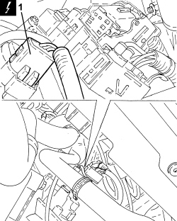
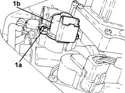
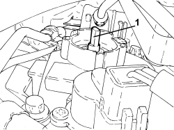
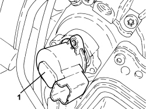
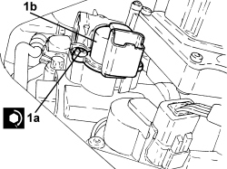

2127E40 HYDRAULIC SELECTION GEARBOX SPEED SELECTION POSITION SENSOR - R.R.
- Path
- Procedures > 21 GEARBOX UNIT > 2127 ELECTRO-HYDRAULIC SELECTION GEARBOX EXTERNAL CONTROLS > 2127E GEAR CONTROL SELECTION ELECTRIC SYSTEM > 2127E40 HYDRAULIC SELECTION GEARBOX SPEED SELECTION POSITION SENSOR - R.R.
- Kind
- repair procedure (removal / refitting; the operation number is the code)
- Applies to
- engines: 2.2 JTS; all production periods
- Interactive page
- https://sloeber94.github.io/elrnDB-aBrrSpdr/en/#/946004316
Applies to: engines: 2.2 JTS; all production periods
 Removing
Removing
 Refitting
Refitting- Place the gear lever in N.
- Connect an Examiner and run the depressurization procedure.
Op. 7055B54 UNDER ENGINE PROTECTION/GUARD - R.R.
1. Disconnect the electrical connection for the gear selector position potentiometer.
Description | Connector | |
|---|---|---|
1 | Gear selector potentiometer |

Applies to: engines: 2.2 JTS; all production periods
1. Undo the bolts (1a) and remove the gear selector position sensor (1b) complete with O-ring.

Applies to: engines: 2.2 JTS; all production periods
Refitting
Removing1. Rotate the engagement pin in a clockwise direction until it is in the end of travel position.

Applies to: engines: 2.2 JTS; all production periods
1. Position the sensor complete with O-ring as illustrated in order to engage the pin positioned previously in line with the reference mark on the sensor.
- Rotate in a clockwise direction (preloading) until the openings are aligned and then press the sensor into place.

Applies to: engines: 2.2 JTS; all production periods
1. Tighten the bolts (1a) fixing the gear selector position sensor (1b) to the recommended torque.
Component | Fastening | dia | Value (daNm) | Validity |
|---|---|---|---|---|
Gear selection position sensor | Bolt | - | 0.3 ÷ 0.42 | 2.2 JTS |

Applies to: engines: 2.2 JTS; all production periods
- Connect the electrical connection for the gear selection sensor.
Op. 0010T60 ELECTROHYDRAULIC SELECTION GEARBOX CLUTCH HYDRAULIC SYSTEM - BLEED AIR
Op. 0010T61 ELECTROHYDRAULIC SELECTION GEARBOX CLUTCH FLUID - CHECK LEVEL AND TOP UP IF NECESSARY
Op. 7055B54 UNDER ENGINE PROTECTION/GUARD - R.R.
- If the sensor is being replaced, connect the Examiner and carry out the auto calibration procedure.
Topics linked from this page (5)
- 0010T60 ELECTROHYDRAULIC SELECTION GEARBOX CLUTCH HYDRAULIC SYSTEM - BLEED AIR
- 0010T61 ELECTROHYDRAULIC SELECTION GEARBOX CLUTCH FLUID - CHECK LEVEL AND TOP UP IF NECESSARY
- 2127C24 PIPE FROM SOLENOID VALVE ASSEMBLY TO MASTER CYLINDER FOR ELECTROHYDRAULIC SELECTION GEARBOX - R.R
- 7055B54 UNDER ENGINE PROTECTION/GUARD - R.R.
- K068 SPEED SELECTION POTENTIOMETER